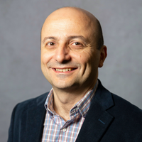
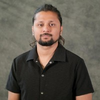

People
Current Staff

Kemal Akkaya, Ph.D.
Professor and Chair, Department of Computer Science
Director, ADWISE Lab
Research interests include network security, privacy, blockchain, digital forensics, and trustworthy AI.
Office: Engineering East Hall Room E4225
Phone: (804) 827-3517
Email: akkayak@vcu.edu

Manish Paudel
Ph.D. Student
Focuses on 5G networks security and optimizations.
Email: paudelm@vcu.edu
Bigyan Karki
Ph.D. Student
Focuses on large language models (LLMs) applications for network datasets.
Email: karkib3@vcu.edu
Alumni
Postdoctoral Researchers
- Dr. Maryna Veksler, 2025-2026
- Dr. Suat Mercan, 2019-2022
- Dr. M. Hossein Manshaei, 2020-2021
- Dr. Nico Saputro, 2016-2019
- Dr. Hamidullah Binol, 2018-2019
- Dr. Hidayet Aksu, 2016-2018
- Dr. Ali Yurekli, 2015-2017
Ph.D. Graduates
- Yacoub Hanna, 2026
- Richard Hernandez, 2025
- Maryna Veksler (co-advised with Dr. Uluagac), 2025
- Ahmet Kurt, 2023
- Oscar Bautista, 2023
- Luis Puche (co-advised with Dr. Uluagac), 2021
- Mai Abdel-Malek (co-advised with Dr. Ibrahim), 2021
- Abdullah Aydeger, 2020
- Mumin Cebe, 2020
- Enes Erdin, 2020
- Abhaykumar Kumbhar, 2019
- Samet Tonyali, 2017
- Nico Saputro, 2016
- Izzet Senturk, 2013
- Fatih Senel (Co-Advisor at UMBC), 2012
- Hakan Oztarak (Co-Advisor at METU, Turkey), 2012
M.S. Graduates
- Diana Pineda, 2024
- Abhishek Bhattarai, 2023
- Ricardo Harrilal-Parchment, 2023
- Hadi Sahin, 2023
- Juan V. Leon, 2022
- Elijah Toissaint, 2021
- Oscar Bautista, 2020
- David Gabay, 2019
- Vashish Baboolal, 2019
- Ramazan Algin, 2018
- Utku Ozgur, 2016
- Ozan Cakmak, 2014
- Abdullah Albuali, 2014
- Mahbubul Khan, 2014
- Andrew Beussink, 2013
- Olive Mbianda, 2013
- Ravi Sriram Krishnamachari, 2013
- Shadi Janensefat, 2013
- Mike Gloff, 2012
- Enes Yildiz, 2011
- Marshall Riley, 2010
- Shanthi Vemulapalli, 2009
- Andrew Newell, 2008
- Ismail Guneydas, 2008
- Aravind Sama, 2008
- Aravind Thimmapuran, 2007
- Srinavas Janapala, 2007